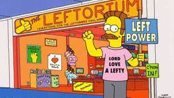

Nedward Flanders Jr., mejor conocido como Ned Flanders es un persona-
je ficticio de la serie de televisión de dibujos animados Los Simpson.
Es un cristiano devoto y es el más amigable y compasivo de todos los
habitantes de Springfield, considerado normalmente como uno de los
pilares de su comunidad. También es propietario del Zurditorium y de
un negocio desde casa, Flancrest Enterprises , que fabrica alfombras
religiosas con ganchos. También trabaja como miembro del Departamento
de Bomberos Voluntarios de Springfield . Incluso es (legalmente) dueño
de la casa de los Simpson y la alquila a la familia a un precio bajo,
lo que demuestra que gastaría gran parte de sus recursos solo para ayu-
dar a sus vecinos. Flanders dice tener 40 años pero en Viva Ned Flanders
asegura tener 60 años.

